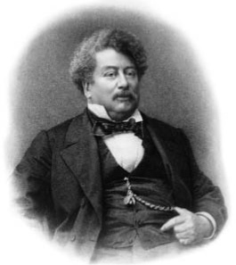

Alexandre Dumas sinh ngày 24 tháng 7 năm 1802 tại Villers-Cotterêts ở miền bắc nước Pháp. Cha ông là một sĩ quan quan trọng - một vị tướng trong quân đội Napoleon. Mẹ của Dumas là con gái của một chủ nhà trọ.
Vào năm 1823, Dumas đến Paris. Ông muốn trở thành một luật sư. Tuy nhiên, ông lại làm việc trong nhà của một người đàn ông giàu có. Dumas bắt đầu viết các vở kịch và tiểu thuyết lịch sử. Chúng rất hấp dẫn và thành công. Dumas trở thành một người nổi tiếng. Ông là một trong những nhà văn người Pháp được yêu thích nhất vào thế kỷ XIX. Ông thích đồ ăn ngon, rượu hảo hạng và những người phụ nữ đẹp. Dumas đã đi đến nhiều quốc gia và tiêu rất nhiều tiền.
Alexandre Dumas đã viết ba câu chuyện về một số người lính Pháp vào thế kỷ XVII. Những câu chuyện này là: Ba chàng lính ngự lâm (1844), Hai mươi năm sau (1845), và Tử tước Bragelonne (1844–1850). Những tác phẩm nổi tiếng khác gồm: Bá tước Monte Cristo (1844–1845) và Hoa tuy líp đen (1850). Người đàn ông trong chiếc mặt nạ sắt là một phần của câu chuyện Tử tước Bragelonne.
Dumas mất ngày 5 tháng 12 năm 1870 tại Puys, gần Dieppe ở miền bắc nước Pháp. Ông thọ 68 tuổi.